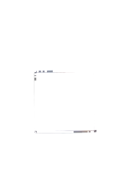
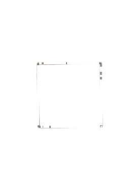
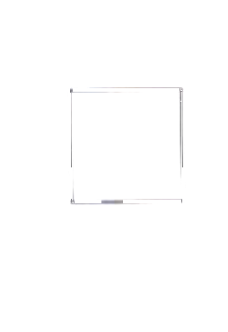
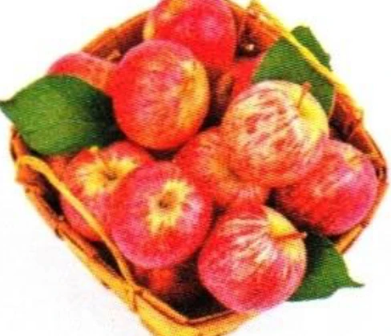
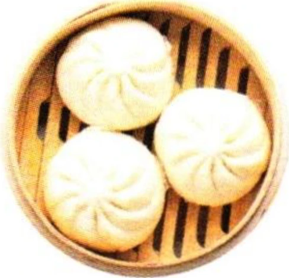
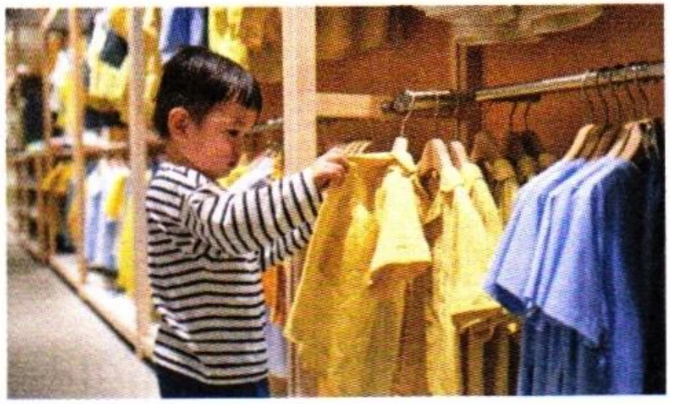

二、阅读ReadingЧтение
第一部分Part IЧасть I
第11—13题：选择与句子最匹配的图片。Questions 11–13: Choose the correct picture for each sentence.Задания 11–13: Выберите картинку, которая лучше всего подходит к предложению.
A
B

C

D

Wǒ hěn xǐhuan zhè běn shū.例如： 我很喜欢这本书。
I like this book very much.Мне очень нравится эта книга.A
11.
请问，包子多少钱一个？
这边的苹果真便宜。
这些是男孩子穿的衣服。
第二部分Part IIЧасть II
第14—16题：匹配句子。Questions 14–16: Match the sentences.Задания 14–16: Сопоставьте предложения.
A十块钱。
B对不起，没有。
C在那边。
D好的，谢谢！